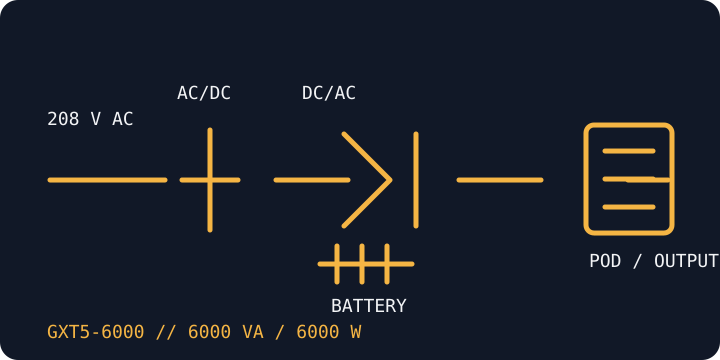

[ ONLINE DOUBLE-CONVERSION UPS // IDENTIFIED MODEL ]
Liebert GXT5-6000MVRT4UXLN
Vertiv's 6000 VA / 6000 W, 208 V rack/tower online UPS. This is a separate 6 kVA rating from the 5 kVA GXT5 model; output connection details depend on the installed distribution module and wiring configuration.

ARCHIVAL IDENTIFICATION: Capture the full model suffix, output voltage, POD label/part number, battery-cabinet identity, serial/date code and installed management card.
Exact model specifications
| Catalog category / topology | Online UPS — double-conversion, pure-sine-wave output. |
|---|---|
| Electrical ratings | 6000 VA / 6000 W; 208 V AC input. Output configuration is installation-specific; verify selected voltage and wiring in the model guide. |
| Transfer behavior | 0 ms inverter transfer during normal online operation. Bypass is a distinct operating path; use the manufacturer instructions for its behavior and switching conditions. |
| Receptacles / connectors | Hardwired input and base output; output receptacles are determined by the compatible Power Output Distribution (POD) fitted to the UPS. The UPS model number alone does not establish a fixed NEMA/IEC outlet count. |
| Battery / runtime | Internal sealed lead-acid batteries; compatible external battery cabinets can extend runtime. Runtime varies with actual output load, battery condition and configuration; consult Vertiv's runtime table. |
| Communication | LCD status/control and IntelliSlot management-card support. Network monitoring requires the appropriate installed card/configuration. |
| Compatibility / safety | Designed for fixed 208 V power infrastructure, not direct connection to arbitrary 120 V receptacles. Qualified electrical personnel must verify phase, voltage, grounding, overcurrent protection, POD and load before energization. |
Manufacturer references
- Vertiv — GXT5-6000MVRT4UXLN product pageManufacturer record for the 6 kVA / 6 kW 208 V model.
- Vertiv — GXT5 208 V installer/user guideManufacturer wiring, operating and safety instructions; match guide coverage to the model and revision.